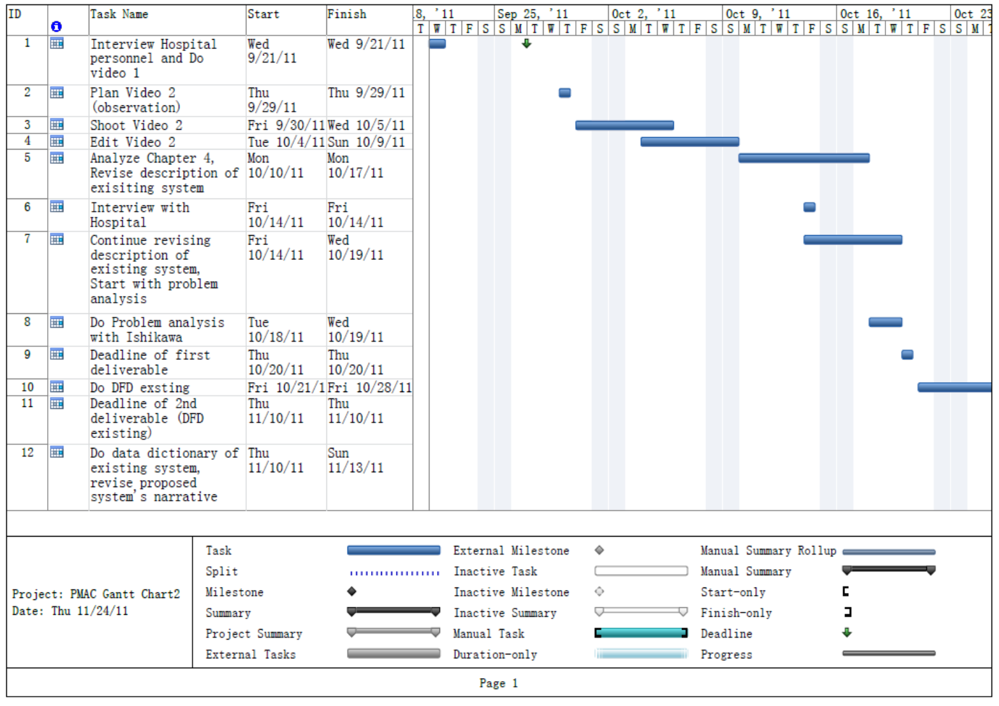
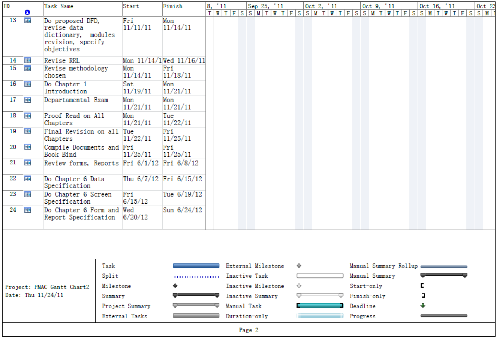
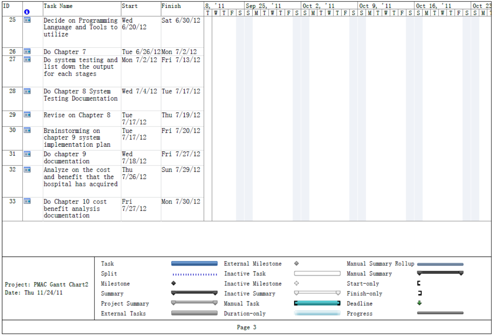
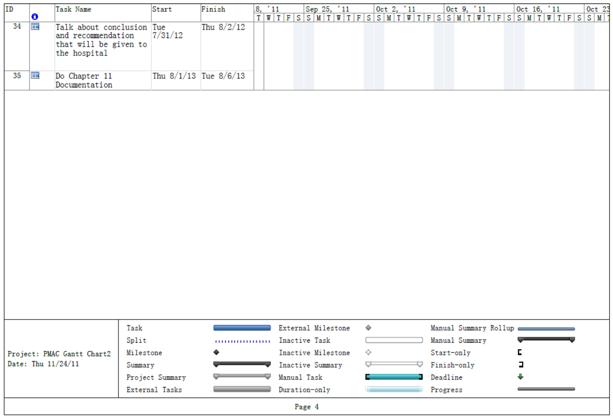
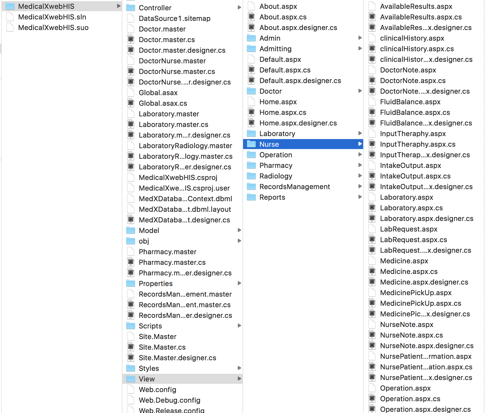

the different aspects of information in terms of its' clinical, financial and operational management
-
Stage 1:
ProposalIntroduction
For this project, the team has developed a Hospital Information System for Manila General Hospital. This was brought by the problem that the team saw hospital's inability to utilize patient information for medical care. Often times, the hospital has redundant information and processes because they counldn't retrieve patient information at one. This is caused by the duplication of records per patient, misplaced patient charts, and delayed retrieval of patient records.
The system the team developed shall handle the processes necessary to aid this problem. The system automatically generates a patient number for every new patient that is to be admitted. If a record of the patient already exists, the system shall assign the patient his old number. This way, duplication of patient records is now avoided and prevented. Aside from this, the system shall also track everything that happens to the patient during his stay in the hospital, making it easier for the doctors and nurses to see his progress.
We believe that system can aid the problems of the hospital. With the use of the system, the nurses and the doctors would not have difficulties in retrieving the patient information that they need. Furthermore, the system shall help them in handling their patients and making sure that both their personnel and their patients would have easily in the processes. -
Systems Development Methodology
The project team has chosen the Agile Methodology for it contains highly iterative development in providing quality services. Since customers (in this case, the patients) are given the highest priority first, continuous feedback are given importance for the reason that there can be frequent changes in the needs of the hospital as time passes by. And this methodology is used In order to come up with a system that fits the hospital's needs.
“Agile Software Development Methods: Review and Analysis” by Abrahamsson, Salo, Ronkainen, and Warsta.
-
Scope & Limitations
The project will only deal with some of the admission process of the patient inside the hospital which includes the admitting section, PhilHealth section, laboratory department, billing section and records section. Beginning from the admitting section, it will start from the moment when the patient is admitted. Next, the patient will go to the PhilHealth section for the confirmation of the admission process. And after admission, the patient will be guided to the wards for his treatment. During his stay at the hospital, he may be required to take the radiology and pathology examinations in the laboratory department. Under the pathology examination, there are different services which are cross matching, fecalysis, urinalysis, hematology, chemistry, serology and blood typing. For the radiology examination, there are X-Ray, Ultrasound and 2D Echo services. In addition, the patient may have to procure medicines at the pharmacy department.
After the treatment, he will then be discharged and will proceed again to the PhilHealth section for the computation of the billing. And finally, the patient's medical chart will then be brought to the records section for records management. That is where the limitation of the scope that the project team will focus on. However, even though the medicine procurement process is involved, the team will not include inventory as a part of the system. And even though there is a brief discussion about the radiology and pathology process, the processes that occur within these departments will not be included in the system. It will only serve as the sender and receiver of forms and reports. It will also be the same for the administration department. -
Stage 2:
System
PrototypeObjectives
This system aims to make the hospital's employee do their duty or tasks better by providing a system which allows centralized access to the departments involved in our scope and render patient a better health service.
1. Allow communication between departments
2. Save storage space by having electronic forms and reports.
3. Reduce the occurrence of data redundancy in the medical charts.
4. Manage records by adding, editing, and deleting the patient’s records.
5. Provide data access to department who needs only the specific information.
6. Lessen the chance of misinterpretation of medical records in penmanship recognition.
7. Lessen the time of processing the discharge process of a patient
8. Generate up-to-date backup files in case corruption of files happens -
Project Gantt Chart
   
-
System Module
1. Patient Registration and Admission Module
2. Outpatient Management Module
3. Records Management Module
4. Nursing Stations Module
5. Pharmacy Transaction Management Module
6. Laboratory Module
7. Ward Allocation Module -
System Design and Coding
1. ASP.net MVC Framework
2. Programming Languange: C++ & C#
3. Database: Microsoft SQL Server
4. Programming Tools: Microsoft Visual Studio
-
Stage 3:
Final
SystemDeveloped System

-
Implementation Plan
1. Training: The users shall be trained in using the system that will be implemented. Aside from the actual training, help videos and other tools may also be presented to them before the actual training starts.
2. System Conversion: Direct Cutover method is the best way to implement the system we have developed for the hospital. Direct Cutover means that the old system shall be immediately replaced by the new one. The entire hospital shall adapt the new system all at the same time.
3. Data Conversion: The group may create a mini program that could read their existing Excel files; however, there will still be a need for information to be input manually. In order to input all existing records, the hospital may designate a specific group to input the data during their shift.

 Gilynne Abby Pua
Gilynne Abby Pua
 Paulina Isaac
Paulina Isaac
 Pananalig Bautista
Pananalig Bautista